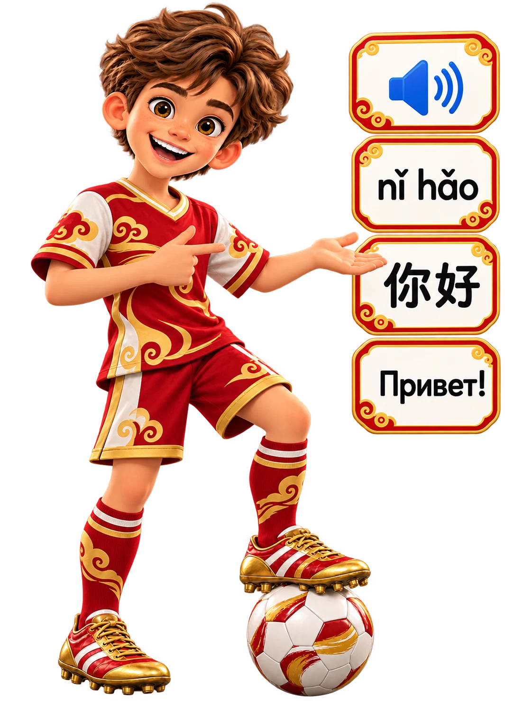

🏮 Инициали и финали
Пиньинь — запись произношения китайского языка латинскими буквами. Инициаль — начальный согласный, финаль — остальная часть слога.
Первые финали: a, o, e, i, u, ü. Первые инициали: b, p, m, f. Тоны изучим подробнее в следующем уроке.
🖼️ Схема слога
Инициаль + финаль + тон = произносимый слог.
Нажми на карточку, чтобы услышать пример (при наличии китайского голоса в браузере).

Подбирай карточки и составляй слоги.Инициаль + финаль = слог.🏟️ Практический стадион: 33 задания
Шесть тренировок от простого к сложному. Ошибку можно исправить, а пройденные задания сохраняются. За тренировки начисляются учебные отметки, а 8 голов — за итоговый тест.
Выполнено: 0 / 33
🧩 Собери слог
Нажми на инициаль и финаль, чтобы собрать ma. На компьютере карточки также можно перетаскивать.
Перенеси или выбери две карточки